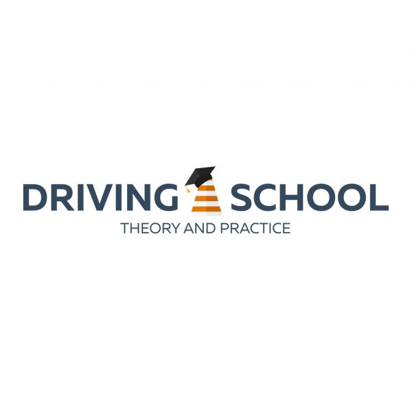

LISA DRIVING SCHOOL
Call us on
072770784.
HOME
ABOUT US
IMAGES
REGISTRATION FORM
BACK GROUND
Lisa Driving School is the modern school that provide driving trainiing in Rwanda.
with experienced instructors Apaforme driving school is the best driving shool in Rwanda.
Lisa Driving School located KK 243 st,Near Kicukiro Equity Bank
Call us: 0782770784
Email: Lisadrivingschool@gmail.com .
STUDYING PRICES
With Lisa Driving School, in one month cost 3000 rwf
and in 3(three) months,cost 8000 rwf
While when you study in 6(six) months cost 12000 rwf.